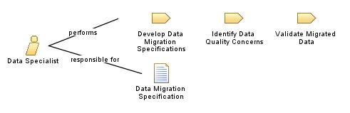

| Role: Data Specialist (041600) |
 |
|
Relationships
 |
||
| Additionally Performs | ||
|---|---|---|
| Modifies |
|
|
Main Description
Typical examples of the deliverables are database designs, information models (logical, physical, dimensional, etc.), data migration plans, and data warehouses. IT Specialists who primarily apply their technical skills in an internal or external customer billable services and implementation environment. |
Staffing
| Skills |
|
|---|
More Information
| Supporting Materials |
|---|
| © Copyright IBM Corp. 1987, 2012 All Rights Reserved Property of IBM These materials are intended only for use as part of an IBM engagement |